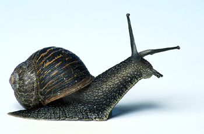

Snail Stew by Aristea
In Crete snails are eaten as a main meal, so a normal serving is about 15-20 snails per person. There are many ways to cook and serve snails. This is a traditional recipe for them.

Preparing snails
Here in Crete we find snails in the wild (see my April 2011 post). Make sure the snails are alive before you cook them – put them in cold water and wait for signs of movement. Take each live snail out of the cold water and throw it immediately into a pot of boiling water. This kills it.
Cooking the snails
Boil the snails in salted water for 20 minutes, changing the water when it gets slimy. Drain the cooked snails, put them in a bowl and cover them with wine. Leave them to marinate in the wine for two hours.
Making the stew
As well as the snails you will need:
1 onion, chopped
4-6 cloves of garlic, crushed
3 large ripe tomatoes, chopped or grated
olive oil
1 1/2 cups of cracked wheat
Sauté the onion and garlic in olive oil until soft. Add the chopped tomatoes and simmer for 10 minutes. Add 4 1/2 cups of water and when the mixture starts to boil, put in the cracked wheat and some salt. Stir well, then cover the pot and cook the mixture on low heat for 10-12 minutes, stirring frequently. Remove the pot from the heat, stir in the snails, cover the pot and leave the entire dish to settle for 20-30 minutes before serving.
Reader comments
It all sounds a bit cruel and complicated to me. Can't I use ready-prepared snails?
French Food Fetishist
This post is interesting, but I wonder if it's safe to eat all types of snails. Do you know if English garden snails are OK to prepare and eat the same way?
Janet B
Hi, I've been enjoying your posts on foraging for and preparing snails. Not something I thought about before, but I may try it!
backwoodsboy
I like the idea of traditional ingredients and finding your own food, but this recipe looks really time-consuming. Not for a housewife who also holds down a job.
Janine McD
I LOVE snails! Back home we cook them with coconut milk and shrimp paste. Your recipe sounds delicious too!
poonambalamK
OMG – you have got to be joking! All that slime and stuff. Just thinking about it makes me feel ill!
Pattie969
This reminds me of summers in Crete - my grandmother made a dish like this. But I can't see my kids going for it – burgers are more their thing!
dimitrisdoukakis
Add a comment